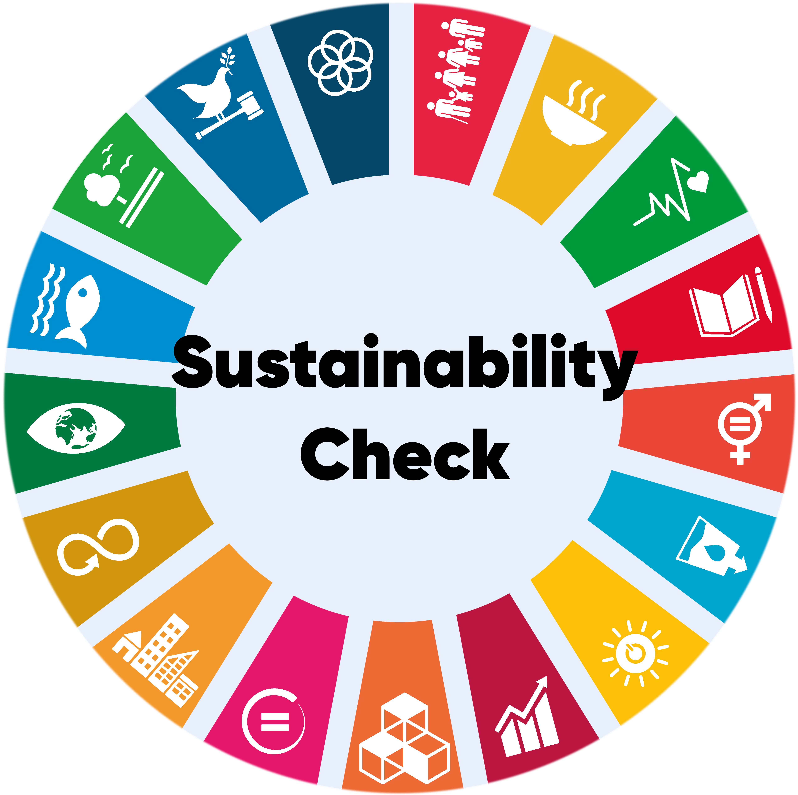

Informationen
Was ist SustainabilityCheck?
SustainabilityCheck ist eine Website die jedem ermöglichen soll, seine eigenen Handlungen zu reflektieren und nachhaltiger zu gestalen. ...
Wie funktioniert SustainabilityCheck?
Beim SustainabilityCheck gibt der Nutzer seine Alltagsdaten an. Diese Daten werden vom System daraufhin mit den jeweils zutreffenden Zielen der UN Sustainable Development Goals abgeglichen und das Resultat, sowie eine Empfehlung zur Anpassung der eigenen Handlung wieder ausgegeben. Anhand dieser Daten hat der Nuter ein Bild, wie nachhaltig sein Handeln ist, bzw. an welchen Punkten noch gearbeitet werden kann. ...
Was sind die Sustainable Development Goals?
Bei den Sustainable Development Goals handelt es sich um eine
Sammlung von Zielen, welche von den UN Nation aufgestellt wurden um
die Probleme auf der Welt aufzuzeigen und konkrete Punkte zu
stellen, an welchen noch gearbeitet werden muss. Die SDGs werden
detailliert auf folgender Seite beschrieben:
Sustainable Development Goals